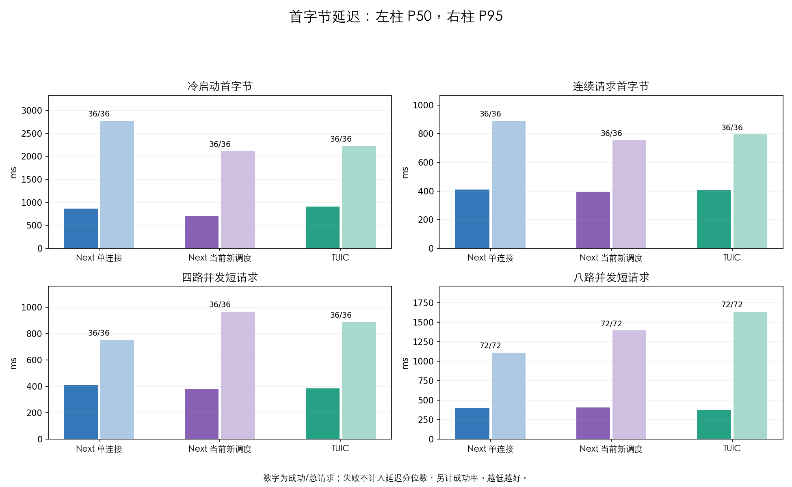
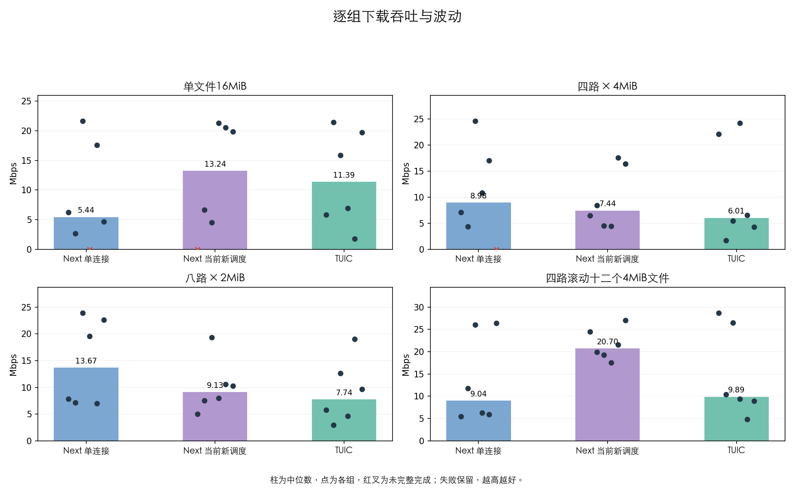
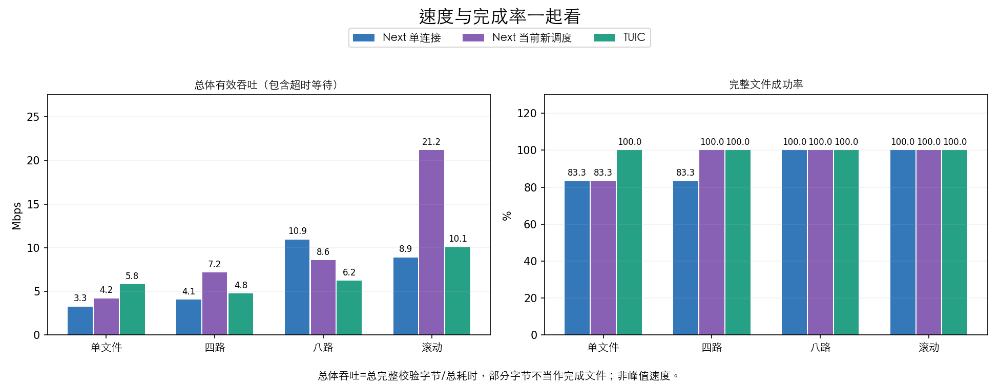
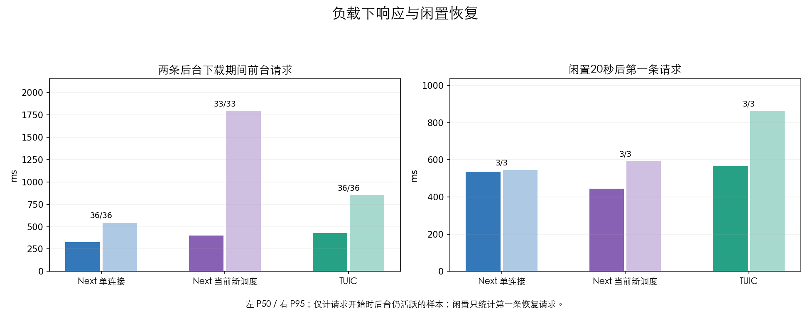
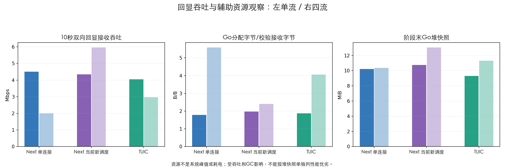
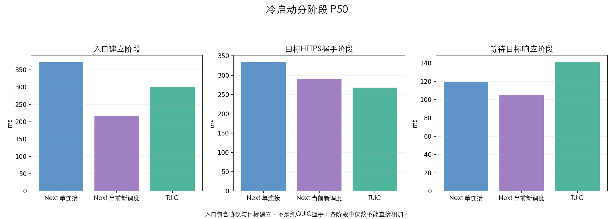

2026-11-22 · TFY-AN00 / Android12 · 同 Wi-Fi、香港 VPS · 相同冻结二进制，测试中未调参。
三项各有优势，保留当前新调度，不根据某一项吞吐宣布全面胜出。本次117组、1251条原始记录完整，540条标准短请求全部成功。下载每个场景每种六轮，包含六种先后排列；短请求/混合/回显/闲置各三组。
闲置20秒后首请求三项均3/3成功，仅三次，P95就是最大样本。固定10秒双向回显六组/方案全部流都有校验数据，但数据波动大，不把它当作纯下载或纯上传结论。Go堆与分配只作辅助观察。
这些是同一安卓、同一Wi-Fi和VPS在本轮时段的描述性结果。跨场景按阶段串行执行，不能据四路和八路间的差异单独推断并发的因果作用。未进行识别率、蜂窝、切网、锁屏耗电或长期可用性验收；本轮没有修改协议或正式App。
三项均为 QUIC + TLS 1.3，BBR。Next 当前新调度最多两条连接，单连接一条，TUIC 使用默认连接策略且 ReduceRtt/FastOpen 关闭。目标为同一 VPS 的可校验 HTTPS 测试服务，减少外站、CDN 与 DNS 差异；不能代表真实互联网网站和所有网络。正式 App 未改，使用安卓原型核心程序。
每例前重启两个隧道测试服务并等待五秒，目标服务保持运行。下载每种六组，覆盖全部六种顺序排列；其他项目每种三组循环先后位置，位置均衡但相邻顺序不完全均衡。短请求分组统计，聚合请求并非全部统计独立。下载组预算：单文件/四路/八路90秒、滚动150秒。各工作流共享同一客户端池，每个业务独立流，不把文件拆包并行。
下载有效吞吐只计完整校验文件，包含握手和等待；未完成的部分字节不计成功。中位数为逐组吞吐，总体有效吞吐为总完整字节/总耗时，失败保留。延迟百分位仅基于成功请求，失败另列，不把失败当0ms；P95使用nearest-rank。样本数有限且网络有时间波动，排名为描述性结果。闲置恢复每种仅3次，P95等于最大样本，不代表长期尾部；本轮未测试切网、锁屏耗电或丢包注入。






| 场景 | 方案 | 成功/请求 | P50 ms | P95 ms | 最大 ms |
|---|---|---|---|---|---|
| 冷启动 | Next 单连接 | 36/36 | 863.84 | 2774.22 | 2826.17 |
| 冷启动 | Next 当前新调度 | 36/36 | 701.33 | 2113.96 | 3364.67 |
| 冷启动 | TUIC | 36/36 | 907.21 | 2226.86 | 3303.39 |
| 连续请求 | Next 单连接 | 36/36 | 411.18 | 889.94 | 1006.92 |
| 连续请求 | Next 当前新调度 | 36/36 | 393.46 | 755.12 | 1207.95 |
| 连续请求 | TUIC | 36/36 | 406.73 | 795.06 | 797.37 |
| 四路短请求 | Next 单连接 | 36/36 | 407.30 | 752.21 | 851.35 |
| 四路短请求 | Next 当前新调度 | 36/36 | 380.28 | 965.24 | 1064.01 |
| 四路短请求 | TUIC | 36/36 | 384.48 | 888.22 | 888.55 |
| 八路短请求 | Next 单连接 | 72/72 | 398.65 | 1108.78 | 1694.93 |
| 八路短请求 | Next 当前新调度 | 72/72 | 405.69 | 1392.71 | 1472.14 |
| 八路短请求 | TUIC | 72/72 | 373.07 | 1634.51 | 1754.70 |
| 下载期间前台请求 | Next 单连接 | 36/36 | 325.25 | 546.15 | 547.38 |
| 下载期间前台请求 | Next 当前新调度 | 33/33 | 402.81 | 1794.98 | 2509.84 |
| 下载期间前台请求 | TUIC | 36/36 | 426.72 | 853.95 | 1452.48 |
| 闲置20秒后首请求 | Next 单连接 | 3/3 | 536.04 | 546.10 | 546.10 |
| 闲置20秒后首请求 | Next 当前新调度 | 3/3 | 444.90 | 592.21 | 592.21 |
| 闲置20秒后首请求 | TUIC | 3/3 | 564.84 | 863.59 | 863.59 |
| 场景 | 方案 | 组数 | 完整文件 | 组中位Mbps | 总体有效Mbps | 最低组 | 最高组 |
|---|---|---|---|---|---|---|---|
| 单文件16MiB | Next 单连接 | 6 | 5/6 | 5.44 | 3.27 | 0.00 | 21.63 |
| 单文件16MiB | Next 当前新调度 | 6 | 5/6 | 13.24 | 4.21 | 0.00 | 21.32 |
| 单文件16MiB | TUIC | 6 | 6/6 | 11.39 | 5.81 | 1.79 | 21.42 |
| 四路下载 | Next 单连接 | 6 | 20/24 | 8.98 | 4.06 | 0.00 | 24.62 |
| 四路下载 | Next 当前新调度 | 6 | 24/24 | 7.44 | 7.17 | 4.46 | 17.56 |
| 四路下载 | TUIC | 6 | 24/24 | 6.01 | 4.77 | 1.66 | 24.27 |
| 八路下载 | Next 单连接 | 6 | 48/48 | 13.67 | 10.95 | 6.97 | 23.94 |
| 八路下载 | Next 当前新调度 | 6 | 48/48 | 9.13 | 8.57 | 5.02 | 19.35 |
| 八路下载 | TUIC | 6 | 48/48 | 7.74 | 6.24 | 2.96 | 19.01 |
| 四路滚动12文件 | Next 单连接 | 6 | 72/72 | 9.04 | 8.91 | 5.43 | 26.41 |
| 四路滚动12文件 | Next 当前新调度 | 6 | 72/72 | 20.70 | 21.18 | 17.58 | 27.08 |
| 四路滚动12文件 | TUIC | 6 | 72/72 | 9.89 | 10.12 | 4.86 | 28.71 |
每组两条16MiB后台下载，十二条前台请求。当前新调度有三条请求开始时后台已结束，因此负载延迟表只计其余33条；三种方案全部36条前台请求均成功。后台完成率独立列出，不能用前台成功掩盖后台停滞。
| 方案 | 全部前台成功 | 发起时仍有后台的请求 | 后台完整文件 |
|---|---|---|---|
| Next 单连接 | 36/36 | 36 | 6/6 |
| Next 当前新调度 | 36/36 | 33 | 6/6 |
| TUIC | 36/36 | 36 | 4/6 |
回显是同时发送并接收相同数据，计校验后的接收吞吐，不是纯上传测速。分配倍率=测量阶段Go累计分配字节/校验接收字节，包含高吞吐引起的正常分配；堆是阶段末快照，受GC时机影响，不是峰值内存、系统RSS或耗电。仅作为辅助观察。
| 方案 | 流数 | 组数 | 成功流 | 接收中位Mbps | 分配字节/接收字节 | 末态堆中位MiB |
|---|---|---|---|---|---|---|
| Next 单连接 | 1 | 3 | 3/3 | 4.51 | 1.78 | 10.22 |
| Next 当前新调度 | 1 | 3 | 3/3 | 4.34 | 1.97 | 10.74 |
| TUIC | 1 | 3 | 3/3 | 4.05 | 1.88 | 9.32 |
| Next 单连接 | 4 | 3 | 12/12 | 2.01 | 5.59 | 10.36 |
| Next 当前新调度 | 4 | 3 | 12/12 | 5.96 | 2.40 | 13.06 |
| TUIC | 4 | 3 | 12/12 | 2.97 | 4.06 | 11.31 |
入口阶段包含连接、协议处理及目标建立，不等于纯QUIC握手；目标TLS是代理后的目标HTTPS握手。各阶段中位数不能相加当作整体中位数。
| 方案 | 入口P50ms | 目标TLSP50ms | 响应P50ms | 总首字节P50ms |
|---|---|---|---|---|
| Next 单连接 | 373.24 | 334.84 | 119.39 | 863.84 |
| Next 当前新调度 | 216.90 | 289.85 | 105.16 | 701.33 |
| TUIC | 300.96 | 267.69 | 141.44 | 907.21 |
完整CSV · 完整JSON · 逐组下载 · 计划与构建哈希 · 时间线。所有原始JSONL、网络状态及失败记录均保留。
手机VPN已恢复，保持亮屏设置恢复为0。临时服务、服务器私有配置和手机测试文件已删除，生产TCP/UDP443、18447仍监听。随包保留测试脚本、功能源码快照、原始日志、CSV及编译哈希；源码快照仍依赖FastCatAPP core工作区的本地依赖，不是独立完整仓库。没有包含部署凭证。